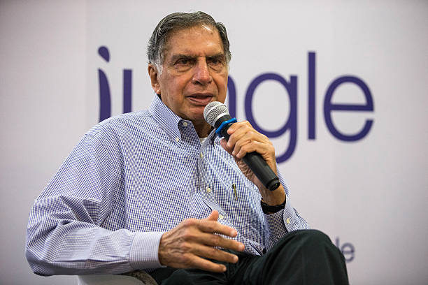

In Memory of Sir Ratan Tata

The Indian business world mourns the passing of Sir Ratan Tata, an icon who redefined the industrial and corporate landscape of the country.
His vision, leadership, and relentless drive to innovate left an indelible mark on India and the world.
Sir Ratan Tata's legacy will forever be remembered not just in the business sphere, but also for his philanthropy and humanitarian efforts.
Sad Demise of Sir Ratan Tata
On [9 October 2024], the nation was shocked to hear about the passing of the business tycoon, Ratan Tata. He passed away at the age of [86].
The news of his demise was met with an outpouring of grief and tributes from across the world.
A humble leader, his contributions to India's economy and his role in the international business community will be remembered for generations.
Achievements and Legacy
Here are some of the major achievements of Sir Ratan Tata during his lifetime:
- Chairman of Tata Group: Ratan Tata served as the Chairman of Tata Group from 1991 to 2012, and once again as interim chairman in 2016. Under his leadership, the company expanded its global footprint.
- Acquisition of Jaguar Land Rover: In 2008, Tata Motors, under Ratan Tata's leadership, acquired the iconic Jaguar Land Rover brands, making Tata Motors a global automotive powerhouse.
- Tata Nano: Tata Motors launched the Tata Nano in 2008, which was marketed as the world's most affordable car, a reflection of his vision for providing affordable mobility to the common man.
- Philanthropy: Ratan Tata has always been a champion of philanthropy. Through Tata Trusts, a significant portion of the Tata Group’s profits are donated to charitable causes, including education, healthcare, and rural development.
- Innovation and Sustainability: Tata introduced sustainability as a core focus for Tata Group companies, leading initiatives in clean energy, affordable technology, and community development.